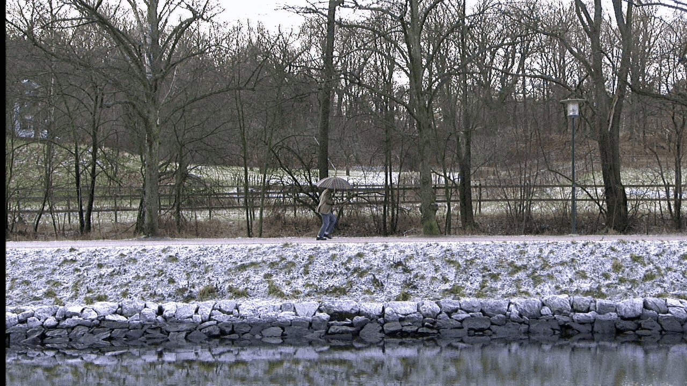

200kb
Плюсы WEBP
- Сайты со сжатыми WebP-картинками работают быстрее. Уходит меньше времени на обработку небольших файлов. Даже если в статье будет под сотню изображений, компрессия спасет от чересчур долгих загрузок.
- Пользователи будут тратить меньше мобильного трафика при посещении сайта со смартфона.
- Выделенный интернет-канал до сервера будет загружен гораздо меньше, если передаваемый медиаконтент меньше весит. Еще один плюс к производительности.
Минусы WEBP
- Поддерживается не всеми браузерами
- Качество все еще снижается

612kb
Плюсы PNG
- Возможность сжатия файла с незначительными потерями или вовсе без них. Рисунок сохраняет исходное качество вне зависимости от интенсивности сжатия
- Возможность сколько угодно сохранять объект в процессе работы, а потом видоизменять снова. Изначальное качество не меняется
- Цветовой диапазон формата шире, нежели у GIF. PNG-8 работает с 256 цветами, PNG-24 – с 16,7 млн. цветов
- Возможность создания и комбинирования слоев
Минусы PNG
- Отсутствие режима анимации
- Затруднения при работе с полноцветными типами изображений
- Невозможность сохранять в одном файле сразу несколько рисунков (попытки добавить формату эту функцию предпринимались, но пока не получили всеобщего признания)

298kb
Плюсы JPG
- Сохранение качества
- Управляемость
- Возможность работы с цветными картинками
- Экономичность/Совместимость
Минусы JPG
- Ухудшение качества при повторном сохранении
- Появление блоков пикселей
- Трудности в работе с прозрачным фоном